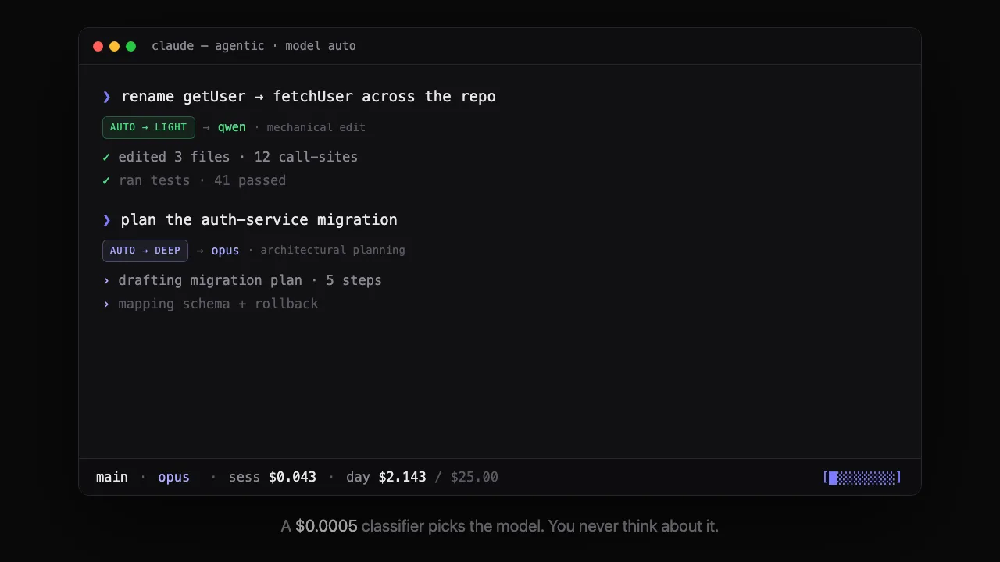

Run Claude Code on any model, with a budget.
agentic wraps Claude Code in a thin local router. Same TUI, same tools, same auto-updates — but the model behind it can be Anthropic, OpenAI, xAI, or anything OpenAI-compatible. Every token is metered, priced, and checked against a budget you set.
curl -fsSL
https://raw.githubusercontent.com/maorbril/agentic/main/install.sh
| sh
What Claude Code alone doesn't do.
It's a great harness and it keeps getting better — forking it means losing that. But it only talks to one provider, and it never tells you what a session cost.
Any provider, one CLI
Anthropic passthrough is byte-faithful. OpenAI, xAI, Ollama,
vLLM, and OpenRouter work through request/stream translation.
Model names are aliases you define in
config.yaml.
Every token priced
A local SQLite log prices every request as it happens.
agentic cost --by model breaks spend down by
model, profile, or session.
Budgets that actually stop you
Daily, weekly, monthly caps, global or per profile. Hit one and the router refuses the next request with a clear message in the TUI — in-flight responses are never cut.
A classifier routes each task
--model auto sends planning to a big model and
mechanical edits to a cheap one. The decision holds for the
whole turn, so nothing flip-flops mid-task.
No daemon, no fork
The first session binds the router port; when it exits, another running session takes over in seconds. Claude Code stays unmodified and keeps auto-updating on its own.
Profiles you switch on the fly
Bundle a main model, a fast background model, and a budget
into a profile. -p cheap for one session,
--model grok for one request.
Watch --model auto route two turns.
A rename goes to qwen, a migration plan goes to
opus — same session, no flag changed mid-task. The
statusline is the receipt: day spend ticks from $2.100 to $2.163
against a $25 cap.

Three ways to get Claude Code off one provider.
agentic isn't the only answer to "I want Claude Code but not locked to Anthropic." Here's how the options actually differ.
| agentic | claude-code-router · proxy forks · LiteLLM | OpenCode, Crush, Goose, Aider | |
|---|---|---|---|
| Harness | Real Claude Code, unmodified, auto-updating | Real Claude Code, unmodified | Different harness entirely — own prompts, tools, TUI |
| Runs as | Static Go binary, no daemon (leader election over a fixed port) | Daemon / server process you deploy and administer | Standalone CLI you run instead of Claude Code |
| Cost & budgets |
First-class CLI: agentic cost, live
statusline, hard-stop daily / weekly / monthly budgets
|
Usually a dashboard (LiteLLM) or not built in | Varies by tool, rarely budget-gated |
| Model routing |
Aliases + a built-in LLM-classifier tier router
(auto), sticky per turn
|
Rule-based routing configs; no classifier-based tiering | Manual model switch, no auto-routing |
| Memory / cross-instance | Composes with clauder — separate binary, optional | Not their concern | Varies |
agentic doesn't try to be a better harness than Claude Code — it
keeps Claude Code exactly as Anthropic ships it and only swaps
what's behind ANTHROPIC_BASE_URL. Want a different
agent loop entirely? OpenCode, Crush, Goose, and Aider are the
right layer to look at. Want a gateway you deploy and administer
for a team? LiteLLM is more mature for that. agentic is for one
developer who wants claude, unmodified, with a
budget and a cheap-model escape hatch — installed in one command,
with nothing to operate.
A gateway, plus the CLI around it.
Claude Code already supports pointing at a gateway via
ANTHROPIC_BASE_URL. agentic is that gateway — it
never touches Claude Code's source.
Install
One command drops the binary in
~/.local/bin. agentic setup
writes a config, registers the statusline, and offers to
install anything missing.
Run agentic
It starts the local router, points Claude Code at it via
ANTHROPIC_BASE_URL, and hands you the exact
same TUI you already know.
The router does the rest
Resolves the model alias, translates the dialect if needed, logs priced usage, checks the budget — then streams the response straight back.
# default profile, tracked ❯ agentic # same session, cheaper models ❯ agentic -p cheap # one-off model override ❯ agentic --model grok # where did today's $4.31 go? ❯ agentic cost --by model opus $2.87 sonnet $1.12 qwen $0.32
Plain Claude Code vs. agentic
| Plain Claude Code | agentic | |
|---|---|---|
| Same TUI, tools, auto-updates | yes | yes |
| Non-Anthropic models | — | 7 providers |
| Per-session cost tracking | — | priced & logged |
| Spend budgets & caps | — | day / week / month |
| Per-task model routing | — | classifier-driven |
| Requires forking Claude Code | n/a | never |
Fine print
How is this billed?
Traffic through the router is billed to your
API keys, not your Claude Pro/Max
subscription. OAuth credentials are never proxied. For
subscription billing, use a passthrough: true
profile — normal claude, no tracking.
Do the non-Anthropic models feel as good?
They work through translation, but Claude Code's prompts and tool patterns are tuned for Claude, so expect them to be clunkier in the main loop. They're better used as cheap workhorses for background tasks and subagents.
Is Claude Code modified?
No. agentic launches the unmodified, auto-updating
claude binary and points it at the local router
via ANTHROPIC_BASE_URL — an officially supported
gateway hook.
Is it secure?
The router binds 127.0.0.1 only and requires a
per-install token (mode 0600), so other local processes can't
spend on your keys. Keys live in ~/.agentic/env,
never in the config file.
What does agentic itself cost?
Nothing — it's MIT-licensed. You pay your model providers for the tokens you use, which is exactly what agentic measures and caps.
One command to a tracked session.
curl -fsSL
https://raw.githubusercontent.com/maorbril/agentic/main/install.sh
| sh